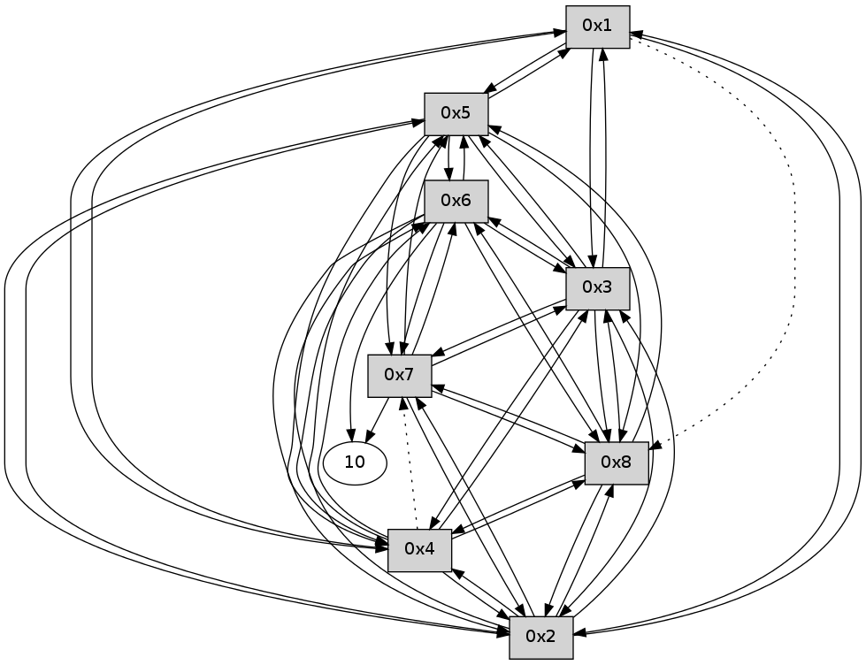

>> << IDX [start] -100 -25 -5 +0 +5 +25 +100 [145.139508963]
 Previous packets
----------------------------------------------------------------------
140.410686 beacon01(11f6) #0 coord=01,02,03,04,05,06,07,08,0a,09 cycle=688.0ms assoc
-- color-indic=0 64 e3 c2
140.420861 beacon02(11f6) #0 coord=01,02,03,04,05,06,07,08,0a,09 cycle=688.0ms assoc 64 70 f3
140.430821 beacon03(11f6) #0 coord=01,02,03,04,05,06,07,08,0a,09 cycle=688.0ms assoc 64 0a be
140.440821 beacon04(11f6) #0 coord=01,02,03,04,05,06,07,08,0a,09 cycle=688.0ms assoc 64 7d 54
140.450821 beacon05(11f6) #0 coord=01,02,03,04,05,06,07,08,0a,09 cycle=688.0ms assoc 64 07 19
140.460822 beacon06(11f6) #0 coord=01,02,03,04,05,06,07,08,0a,09 cycle=688.0ms assoc 64 89 ce
140.470822 beacon07(11f6) #0 coord=01,02,03,04,05,06,07,08,0a,09 cycle=688.0ms assoc 64 f3 83
140.480826 beacon08(11f6) #0 coord=01,02,03,04,05,06,07,08,0a,09 cycle=688.0ms assoc 64 76 12
140.516986 [Hello(5): seq=36 sym=1,2,7,6,3,8,4 sysInfo= stat=1:4,0,0,0/2:1,0,0,0/7:14,0,0,0/6:2,0,0,0/3:3,0,0,0/8:3,0,0,0/4:1,0,0,0]
140.527441 [Hello(4): seq=36 sym=1,2,5,6,3,8 asym=7 sysInfo= stat=1:3,0,0,0/2:2,0,0,0/5:2,0,0,0/6:2,0,0,0/3:3,0,0,0/8:1,0,0,0/7:5,0,0,0]
140.533317 [Hello(7): seq=36 sym=10,5,6,8,3 sysInfo= stat=10:15,0,0,0/5:1,0,0,0/6:3,0,0,0/8:3,0,0,0/3:1,0,0,0]
140.613036 [Hello(2): seq=36 sym=1,5,3,8,4,6 asym=7 sysInfo= stat=1:3,0,0,0/5:2,0,0,0/3:3,0,0,0/8:3,0,0,0/4:1,0,0,0/6:0,0,0,0/7:15,0,0,0]
140.623055 [Hello(8): seq=36 sym=2,7,5,6,3,4 sysInfo= stat=2:1,0,0,0/7:0,0,0,0/5:1,0,0,0/6:3,0,0,0/3:1,0,0,0/4:1,0,0,0]
140.625288 [Hello(6): seq=36 sym=10,7,5,3,8,4,2 sysInfo= stat=10:15,0,0,0/7:15,0,0,0/5:14,0,0,0/3:2,0,0,0/8:3,0,0,0/4:15,0,0,0/2:6,0,0,0]
140.631294 [Hello(3): seq=36 sym=1,2,7,5,6,8,4 sysInfo= stat=1:4,0,0,0/2:2,0,0,0/7:15,0,0,0/5:2,0,0,0/6:3,0,0,0/8:4,0,0,0/4:3,0,0,0]
----------------------------------------------------------------------
141.198824 beacon01(11f6) #0 coord=01,02,03,04,05,06,07,08,0a,09 cycle=688.0ms assoc
-- color-indic=0 64 5f c7
141.208974 beacon02(11f6) #0 coord=01,02,03,04,05,06,07,08,0a,09 cycle=688.0ms assoc 64 cc f6
141.218959 beacon03(11f6) #0 coord=01,02,03,04,05,06,07,08,0a,09 cycle=688.0ms assoc 64 b6 bb
141.228959 beacon04(11f6) #0 coord=01,02,03,04,05,06,07,08,0a,09 cycle=688.0ms assoc 64 c1 51
141.238959 beacon05(11f6) #0 coord=01,02,03,04,05,06,07,08,0a,09 cycle=688.0ms assoc 64 bb 1c
141.248960 beacon06(11f6) #0 coord=01,02,03,04,05,06,07,08,0a,09 cycle=688.0ms assoc 64 35 cb
141.258960 beacon07(11f6) #0 coord=01,02,03,04,05,06,07,08,0a,09 cycle=688.0ms assoc 64 4f 86
141.268965 beacon08(11f6) #0 coord=01,02,03,04,05,06,07,08,0a,09 cycle=688.0ms assoc 64 ca 17
141.379969 [Hello(1): seq=37 sym=5,3,2,4 asym=8 sysInfo= stat=5:2,0,0,0/3:4,0,0,0/2:1,0,0,0/4:1,0,0,0/8:4,0,0,0]
----------------------------------------------------------------------
141.986960 beacon01(11f6) #0 coord=01,02,03,04,05,06,07,08,0a,09 cycle=688.0ms assoc
-- color-indic=0 64 6b df
141.997120 beacon02(11f6) #0 coord=01,02,03,04,05,06,07,08,0a,09 cycle=688.0ms assoc 64 f8 ee
142.007095 beacon03(11f6) #0 coord=01,02,03,04,05,06,07,08,0a,09 cycle=688.0ms assoc 64 82 a3
142.017095 beacon04(11f6) #0 coord=01,02,03,04,05,06,07,08,0a,09 cycle=688.0ms assoc 64 f5 49
142.027096 beacon05(11f6) #0 coord=01,02,03,04,05,06,07,08,0a,09 cycle=688.0ms assoc 64 8f 04
142.037096 beacon06(11f6) #0 coord=01,02,03,04,05,06,07,08,0a,09 cycle=688.0ms assoc 64 01 d3
142.047096 beacon07(11f6) #0 coord=01,02,03,04,05,06,07,08,0a,09 cycle=688.0ms assoc 64 7b 9e
142.057100 beacon08(11f6) #0 coord=01,02,03,04,05,06,07,08,0a,09 cycle=688.0ms assoc 64 fe 0f
142.108013 [Hello(2): seq=37 sym=1,5,3,8,4,6 asym=7 sysInfo= stat=1:4,0,0,0/5:2,0,0,0/3:4,0,0,0/8:4,0,0,0/4:1,0,0,0/6:1,0,0,0/7:15,0,0,0]
142.189281 [Hello(3): seq=37 sym=1,2,7,5,6,8,4 sysInfo= stat=1:5,0,0,0/2:2,0,0,0/7:15,0,0,0/5:2,0,0,0/6:3,0,0,0/8:4,0,0,0/4:3,0,0,0]
142.192048 [Hello(8): seq=37 sym=2,7,5,6,3,4 sysInfo= stat=2:1,0,0,0/7:0,0,0,0/5:1,0,0,0/6:5,0,0,0/3:2,0,0,0/4:1,0,0,0]
142.200630 [Hello(7): seq=37 sym=10,5,6,8,3,2 sysInfo= stat=10:0,0,0,0/5:1,0,0,0/6:5,0,0,0/8:5,0,0,0/3:3,0,0,0/2:0,0,0,0]
142.207295 [Hello(4): seq=37 sym=1,2,5,6,3,8 asym=7 sysInfo= stat=1:4,0,0,0/2:3,0,0,0/5:2,0,0,0/6:3,0,0,0/3:5,0,0,0/8:3,0,0,0/7:7,0,0,0]
142.218940 [Hello(5): seq=37 sym=1,2,7,6,3,8,4 sysInfo= stat=1:5,0,0,0/2:2,0,0,0/7:0,0,0,0/6:3,0,0,0/3:5,0,0,0/8:5,0,0,0/4:3,0,0,0]
----------------------------------------------------------------------
142.775099 beacon01(11f6) #0 coord=01,02,03,04,05,06,07,08,0a,09 cycle=688.0ms assoc
-- color-indic=0 64 d7 da
142.785259 beacon02(11f6) #0 coord=01,02,03,04,05,06,07,08,0a,09 cycle=688.0ms assoc 64 44 eb
142.795233 beacon03(11f6) #0 coord=01,02,03,04,05,06,07,08,0a,09 cycle=688.0ms assoc 64 3e a6
142.805234 beacon04(11f6) #0 coord=01,02,03,04,05,06,07,08,0a,09 cycle=688.0ms assoc 64 49 4c
142.815235 beacon05(11f6) #0 coord=01,02,03,04,05,06,07,08,0a,09 cycle=688.0ms assoc 64 33 01
142.825234 beacon06(11f6) #0 coord=01,02,03,04,05,06,07,08,0a,09 cycle=688.0ms assoc 64 bd d6
142.835234 beacon07(11f6) #0 coord=01,02,03,04,05,06,07,08,0a,09 cycle=688.0ms assoc 64 c7 9b
142.845239 beacon08(11f6) #0 coord=01,02,03,04,05,06,07,08,0a,09 cycle=688.0ms assoc 64 42 0a
142.992239 [Hello(1): seq=38 sym=5,3,2,4 asym=8 sysInfo= stat=5:3,0,0,0/3:5,0,0,0/2:1,0,0,0/4:2,0,0,0/8:5,0,0,0]
----------------------------------------------------------------------
143.563237 beacon01(11f6) #0 coord=01,02,03,04,05,06,07,08,0a,09 cycle=688.0ms assoc
-- color-indic=0 64 13 d4
143.573388 beacon02(11f6) #0 coord=01,02,03,04,05,06,07,08,0a,09 cycle=688.0ms assoc 64 80 e5
143.583371 beacon03(11f6) #0 coord=01,02,03,04,05,06,07,08,0a,09 cycle=688.0ms assoc 64 fa a8
143.593372 beacon04(11f6) #0 coord=01,02,03,04,05,06,07,08,0a,09 cycle=688.0ms assoc 64 8d 42
143.603373 beacon05(11f6) #0 coord=01,02,03,04,05,06,07,08,0a,09 cycle=688.0ms assoc 64 f7 0f
143.613373 beacon06(11f6) #0 coord=01,02,03,04,05,06,07,08,0a,09 cycle=688.0ms assoc 64 79 d8
143.623372 beacon07(11f6) #0 coord=01,02,03,04,05,06,07,08,0a,09 cycle=688.0ms assoc 64 03 95
143.633378 beacon08(11f6) #0 coord=01,02,03,04,05,06,07,08,0a,09 cycle=688.0ms assoc 64 86 04
143.680554 [Hello(5): seq=38 sym=1,2,7,6,3,8,4 sysInfo= stat=1:6,0,0,0/2:2,0,0,0/7:0,0,0,0/6:3,0,0,0/3:5,0,0,0/8:5,0,0,0/4:3,0,0,0]
143.714250 [Hello(2): seq=38 sym=1,7,5,3,8,4,6 sysInfo= stat=1:5,0,0,0/7:0,0,0,0/5:4,0,0,0/3:5,0,0,0/8:5,0,0,0/4:2,0,0,0/6:1,0,0,0]
143.733576 [Hello(7): seq=38 sym=10,5,6,8,3,2 sysInfo= stat=10:1,0,0,0/5:3,0,0,0/6:5,0,0,0/8:5,0,0,0/3:3,0,0,0/2:1,0,0,0]
143.762217 [Hello(3): seq=38 sym=1,2,7,5,6,8,4 sysInfo= stat=1:6,0,0,0/2:3,0,0,0/7:1,0,0,0/5:4,0,0,0/6:3,0,0,0/8:5,0,0,0/4:4,0,0,0]
143.776229 [Hello(6): seq=38 sym=10,7,5,3,8,4,2 sysInfo= stat=10:1,0,0,0/7:1,0,0,0/5:0,0,0,0/3:5,0,0,0/8:4,0,0,0/4:0,0,0,0/2:7,0,0,0]
143.783234 [Hello(4): seq=38 sym=1,2,5,6,3,8 asym=7 sysInfo= stat=1:5,0,0,0/2:4,0,0,0/5:4,0,0,0/6:4,0,0,0/3:6,0,0,0/8:3,0,0,0/7:8,0,0,0]
143.815226 [Hello(8): seq=38 sym=2,7,5,6,3,4 sysInfo= stat=2:2,0,0,0/7:2,0,0,0/5:3,0,0,0/6:6,0,0,0/3:4,0,0,0/4:3,0,0,0]
----------------------------------------------------------------------
144.351373 beacon01(11f6) #0 coord=01,02,03,04,05,06,07,08,0a,09 cycle=688.0ms assoc
-- color-indic=0 64 af d1
144.361549 beacon02(11f6) #0 coord=01,02,03,04,05,06,07,08,0a,09 cycle=688.0ms assoc 64 3c e0
144.371510 beacon03(11f6) #0 coord=01,02,03,04,05,06,07,08,0a,09 cycle=688.0ms assoc 64 46 ad
144.381509 beacon04(11f6) #0 coord=01,02,03,04,05,06,07,08,0a,09 cycle=688.0ms assoc 64 31 47
144.391509 beacon05(11f6) #0 coord=01,02,03,04,05,06,07,08,0a,09 cycle=688.0ms assoc 64 4b 0a
144.401509 beacon06(11f6) #0 coord=01,02,03,04,05,06,07,08,0a,09 cycle=688.0ms assoc 64 c5 dd
144.411511 beacon07(11f6) #0 coord=01,02,03,04,05,06,07,08,0a,09 cycle=688.0ms assoc 64 bf 90
144.421512 beacon08(11f6) #0 coord=01,02,03,04,05,06,07,08,0a,09 cycle=688.0ms assoc 64 3a 01
144.465556 [Hello(1): seq=39 sym=5,3,2,4 asym=8 sysInfo= stat=5:4,0,0,0/3:6,0,0,0/2:2,0,0,0/4:3,0,0,0/8:6,0,0,0]